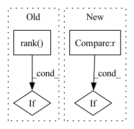

Pattern ID :32514
Before Change
self.save_checkpoint(n, cumulative_loss)
min_loss = cumulative_loss
if hvd.rank() == 0:
self.print_observable(cumulative_loss)
// resample the dataAfter Change
min_loss = cumulative_loss
if self.chkpt_every is not None:
if (n > 0) and (n % chkpt_every == 0):
self.save_checkpoint(n, cumulative_loss)
self.print_observable(cumulative_loss)In pattern: SUPERPATTERN
Frequency: 3
Non-data size: 4
Instances Fragment ID: 94696004
Project Name: nlesc-jcer/qmctorch
Commit Name: 90a20f660535056412598fb1083c6c01873f3eee
Time: 2021-03-11
Author: matthijs111@gmail.com
File Name: qmctorch/solver/solver_orbital_horovod.py
M Class Name: SolverOrbitalHorovod
N Class Name: SolverOrbitalHorovod
M Method Name: run(9)
N Method Name: run(9)
M Parent Class: SolverOrbital
N Parent Class: SolverOrbital
M File Name: qmctorch/solver/solver_orbital_horovod.py
N File Name: qmctorch/solver/solver_orbital_horovod.py
M Start Line: 141
M End Line: 184
N Start Line: 99
N End Line: 186
Before Change
self._rendezvous_info = rendezvous_info
if self._hvd_config.use:
self._is_chief = horovod.hvd.rank() == 0
else:
self._is_chief = True
if self._hvd_config.use:
// Initialize zmq comms.
srv_pub_port = (
constants.INTER_TRAIN_PROCESS_COMM_PORT_1 + self._env.det_trial_unique_port_offset
)
srv_pull_port = (
constants.INTER_TRAIN_PROCESS_COMM_PORT_2 + self._env.det_trial_unique_port_offset
)
if self._is_chief:
logging.debug(f"Chief setting up server with ports {srv_pub_port}/{srv_pull_port}.")
self._chief_zmq = ipc.ZMQBroadcastServer(
num_connections=self._env.experiment_config.slots_per_trial() - 1,After Change
self._is_chief = self._info.rank == 0
self._is_local_chief = self._info.local_rank == 0
if len(self._rendezvous_info.get_addrs()) != self._info.cross_size :
raise AssertionError(
f"rendezvous_info has {len(self._rendezvous_info.get_addrs())} addresses but "
f"rank_info indicates there are {self._info.cross_size} machines" Fragment ID: 94696005
Project Name: determined-ai/determined
Commit Name: b21a57f66989b1cffd8bbfe13710a462a7dca635
Time: 2021-06-29
Author: rb@determined.ai
File Name: harness/determined/_train_context.py
M Class Name: DistributedContext
N Class Name: DistributedContext
M Method Name: __init__(5)
N Method Name: __init__(4)
M Parent Class:
N Parent Class:
M File Name: harness/determined/_train_context.py
N File Name: harness/determined/_train_context.py
M Start Line: 201
M End Line: 241
N Start Line: 274
N End Line: 291
Before Change
logging.info("Epoch[%d]\tTrain: %s=%f\tValidation: %s=%f", epoch, name,
train_acc, name, val_acc)
if hvd.rank() == 0 and epoch == args.epochs - 1 :
assert val_acc > 0.96, "Achieved accuracy (%f) is lower than expected\
(0.96)" % val_acc
if hvd.rank() == 0:After Change
def train_horovod(learning_rate):
if not args.no_cuda:
// Disable CUDA if there are no GPUs.
if not mx.test_utils.list_gpus():
args.no_cuda = True
logging.basicConfig(level=logging.INFO) Fragment ID: 94696006
Project Name: oap-project/cloudtik
Commit Name: 29ad1444c5a91fffad470f46c5ebe5c77059d551
Time: 2023-01-10
Author: haifeng.chen@intel.com
File Name: example/ml/jobs/mxnet/mnist-mxnet-horovod-run-hyperopt-mlflow.py
M Class Name: AnonimousClass
N Class Name: AnonimousClass
M Method Name: train_horovod(1)
N Method Name: train_horovod(1)
M Parent Class:
N Parent Class:
M File Name: example/ml/jobs/mxnet/mnist-mxnet-horovod-run-hyperopt-mlflow.py
N File Name: example/ml/jobs/mxnet/mnist-mxnet-horovod-run-hyperopt-mlflow.py
M Start Line: 154
M End Line: 189
N Start Line: 112
N End Line: 117